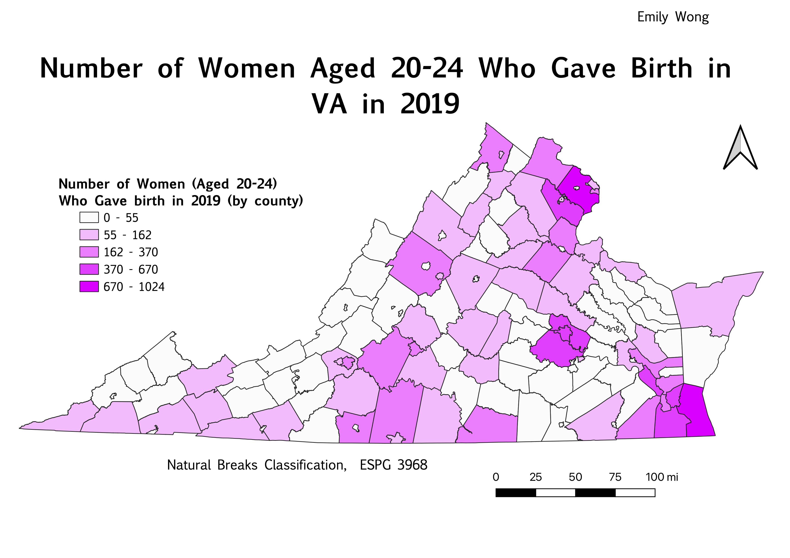
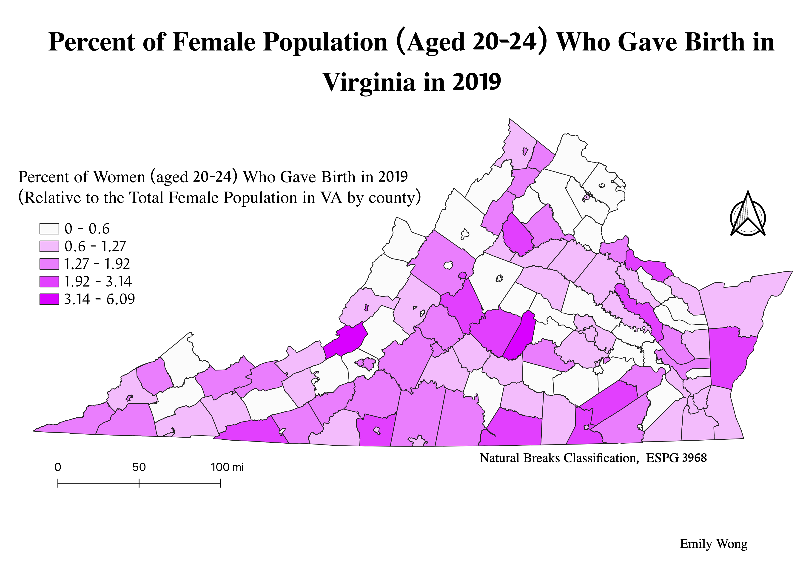

Number of Women Aged 20-24 Who Gave Birth In Virginia
This map shows the number of women in each VA county who are between the age 20 and 24 that gave birth. I chose this topic because Virginia is my home state, and the age range I chose pertains to my current age range. I was interested in seeing which counties had the most births for this age group. Obviously, the most populated counties in Virginia (Fairfax, Virginia Beach, Richmond) have the largest number of births for this age group.

Percent of the Total Female Population Who Gave Birth and Are Age 20-24
I decided to create another map that depicts the percent of women aged 20-24 that gave birth relative to the entire female population of each county. This map does a better job of showing which counties have a higher percentage of this age group giving birth, rather than just which counties had the most births. In this map, the counties that appeared the darkest pink in the previous map are no longer in the highest category. This shows that the counties with larger populations actually have a lower percentage of births for this age group. In this map, the majority of the counties in the highest percentage category (the darkest pink) tend to be some of the least populated counties in Virginia.

Data Links:
Cleaned CSV
Virginia geoJSON
Complete CSV
Link to Website Where Data Was Obtained